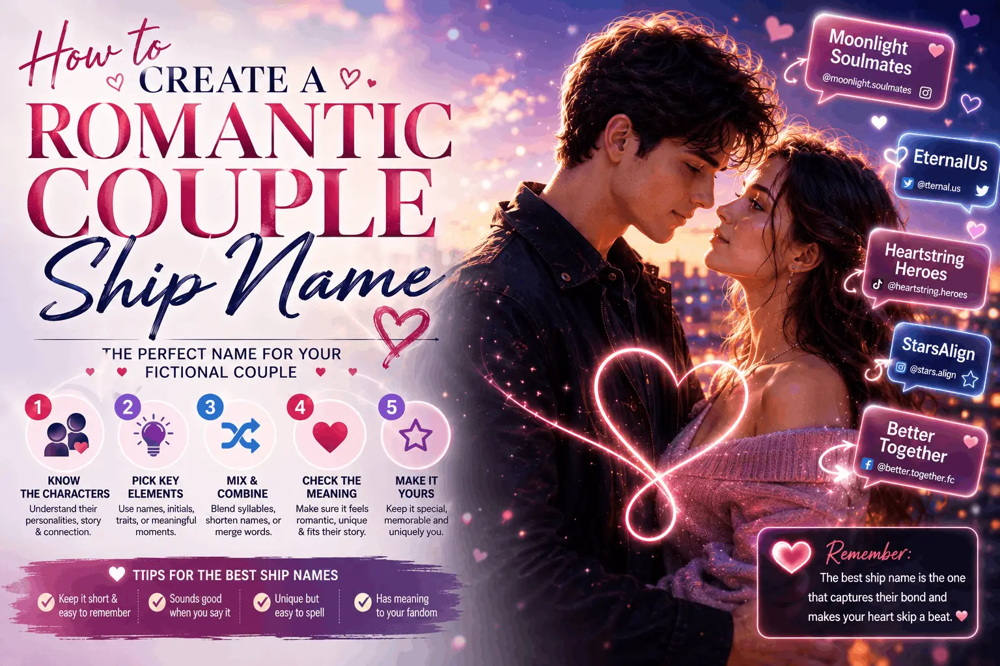

How to Create a Romantic Couple Ship Name
A couple nickname should feel like it was made for the two of you, not stitched together from spare letters. Here is how to build one that sounds genuinely sweet.

There is something quietly lovely about having a name that belongs to a relationship rather than a person. A couple ship name generator blends both of yours into a single word you can use as a pet name, a shared signature, a photo caption, or an inside joke that only the two of you fully get. The best ones sound so natural that people assume you always had them. This guide covers how to get there, from the first blend to the final pick.
What separates a sweet blend from an awkward one
A romantic ship name lives or dies on how it sounds when spoken with affection. Say it out loud in the tone you would actually use, softly, warmly, and notice whether it flows or snags. The sweet ones tend to end on a gentle vowel or a soft consonant, keep a smooth rhythm of vowels and consonants, and stay short enough to say in one relaxed breath.
The awkward ones usually break one of those rules. They pile consonants where the two names collide, they run too long, or they end on a hard stop that makes the name feel abrupt rather than tender. Fixing an awkward blend is often just a matter of trimming a letter or choosing a softer ending.
Step one: try both name orders
The single most important trick is to blend the names in both directions. "Alex and Emma" and "Emma and Alex" produce completely different results, and one almost always sounds noticeably better than the other. Never settle on the first order you try. Generate both, say them aloud, and let your ear pick the winner.
Step two: aim for a soft, flowing shape
Romantic names lean feminine-soft in their sound regardless of who they belong to, because softness reads as affection. Endings like a light "-a," "-ie," "-ella," or "-elle" tend to feel warm. Avoid harsh clusters and abrupt stops. If your blend ends on a hard consonant and feels cold, adding a soft vowel sound can transform it, though only when the result still reads naturally.
Step three: keep both names audible
A great couple name is recognizable. When your partner hears it, they should be able to catch a piece of both names inside. If the blend leans so hard on one name that the other disappears, it stops feeling shared and starts feeling like one person's nickname with extra letters. Balance matters: a good blend gives each name a real presence.
Step four: pick the length that fits
Most couple names sit comfortably between four and seven letters. Short enough to be easy and affectionate, long enough to hold both names. Very long blends feel like a mouthful and rarely get used, while very short ones can lose one of the names entirely. When in doubt, err on the shorter side; pet names are meant to be quick.
Common mistakes to avoid
- Forcing every letter in. You do not need all of both names. Dropping a syllable usually sounds better than cramming everything together.
- Ending on a hard stop. Names that end on a soft sound feel warmer and more affectionate.
- Only trying one order. Half the good options live in the reversed version.
- Ignoring how it sounds spoken. A name that looks fine but sounds clumsy will never get used.
Let a generator do the heavy lifting
Blending two names by hand, in both orders, while smoothing awkward joins and testing pronunciation, is more work than it sounds. A couple name generator runs all of those steps at once. Type both of your names, choose the Romantic Couple purpose and a Romantic or Cute style, and it produces a ranked set of soft, pronounceable blends, having already filtered out the clunky ones.
Treat the results as a shortlist rather than a verdict. Read the top few aloud together, notice which one makes you both smile, and generate again for a fresh batch if nothing lands. The tool is fast and unlimited, so you can keep exploring until a name just feels like yours. That moment of recognition, the "that's the one" feeling, is what you are looking for, and it usually arrives faster when you are choosing from good options instead of starting from a blank page.
Match the name to the moment
Not every couple name has to do the same job. Some pairs want one soft, private nickname they only use with each other, while others want something a little more public that works as a shared handle or a caption people will actually see. It helps to decide which one you are making before you start. A private pet name can lean as sweet and silly as you like, because the only audience is the two of you. A public-facing blend needs to survive being read by strangers, so it should be clean, easy to spell, and free of any accidental second meaning.
If you want both, make the private one first and the public one second. The private version often suggests the public one anyway. A soft blend you love saying out loud usually trims down into a tidy handle with very little effort, and starting from something you already feel warmly about beats starting from a blank field.
How style changes the feel
The same two names can produce very different moods depending on the shaping you choose. A Cute style keeps things short and playful, leaning on light endings that feel affectionate and easy. A Romantic style stretches toward softer, more flowing shapes that sound tender when spoken slowly. An Elegant style favors longer, more graceful blends that would not look out of place on a wedding invitation. Trying the same pair across two or three styles is one of the fastest ways to discover a version you would never have thought of by hand, and it costs nothing but a few extra seconds.
Do not lock into the first style either. Couples often assume they want the obvious romantic shaping and then fall for something from the cute or unique set instead. Let the names surprise you before you decide what mood you are after.
Making it official
Once you have your name, put it to work. Use it as a caption on your next photo together, set it as a shared note, or make it the name of your joint playlist. The more you use it, the more it becomes genuinely yours. A couple name is a tiny piece of shared identity, and like any inside joke, it grows sweeter the longer it sticks around.
The goal here is not cleverness for its own sake. It is a name that, when either of you says it, feels like a small act of affection. Start with both of your names, try both orders, keep it soft and pronounceable, and trust the version that makes you smile.
Keep reading
Choosing a Couple Social Media Handle
Land a shared username that is memorable and available.
Ideas100+ Cute Ship Names for Couples
Browse cute blends by style and spin your own.
Baby NamesFinding a Baby Name Using Ship Names
Blend two names into fresh, real-sounding baby name ideas.